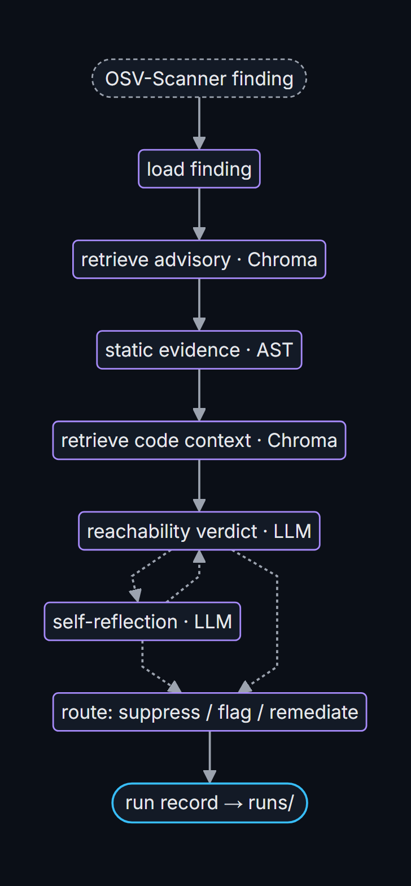

Sieve · agentic reachability triage
Scanners flag hundreds of vulnerable dependencies.
Most can't be reached from your code.
This agent separates the real ones from the noise, shows its evidence, and fixes the real ones with a test that proves it. Every number and case below is built from committed run records.
Verdicts
Ablations
Featured cases
Charts
Interactive version: ablations with hover.
How it works
